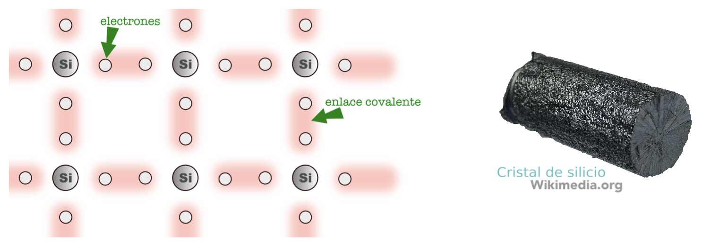

Materiales semiconductores
El empleo de los materiales semiconductores supuso una revolución en el campo de la electrónica. Componentes como el diodo, el transistor y los circuitos integrados, entre otros, se construyen en la actualidad con materiales semiconductores.
Los materiales semiconductores son materiales que se pueden comportar eléctricamente tanto como aislantes como conductores. Los principales materiales semiconductores usados en electrónica son el silicio (Si) y el germanio (Ge). Tanto el silicio como el germanio tienen cuatro electrones en su última capa, la llamada capa de valencia, que comparten con los átomos que le rodean en un enlace covalente, formando todos juntos una estructura cristalina estable.

La estructura del silicio no tiene electrones libres y por lo tanto no permite el paso de la corriente eléctrica, es un aislante eléctrico. Para conseguir que conduzca la electricidad se le añaden impurezas, elementos químicos que tienen 3 o 5 electrones en su última capa de manera que producimos en el silicio un desequilibrio eléctrico. A este proceso se le denomina dopaje, y con él obtenemos los dos tipos de semiconductores utilizados para fabricar componentes electrónicos:
|
Semiconductor tipo N Al dopar el silicio con impurezas de valencia 5, como con el arsénico (As), bismuto (Bi), antimonio (Sb) o fósforo (P), creamos un exceso de electrones en la estructura del silicio y este se carga negativamente al tener electrones libres. Por cada átomo de impurezas añadido se genera un electrón libre, que puede formar parte de la corriente eléctrica. |
 |
|
Semiconductor tipo P Al dopar el silicio con impurezas de valencia 3, como con el indio (In), aluminio (Al), galio (Ga) o boro (B), creamos lo que se denomina un hueco, la falta de un electrón para completar los enlaces covalentes entre un átomo de impureza y un átomo de silicio o germanio, creándose así una carga eléctrica positiva. Aunque los huecos no son más que la falta de un electrón, a efectos prácticos se pueden considerar como cargas positivas que se pueden mover por el cristal (en realidad, será que un electrón llena ese hueco y deja otro hueco en otro lado del cristal, pero para nosotros es como si el hueco se hubiera movido) |
 |
Controlando el dopaje de nuestro cristal de silicio, podemos combinar zonas de dopaje P con zonas de dopaje N y conseguir dispositivos que nos permitan controlar el paso o no de corriente cuando nosotros queramos. De estos componentes los más importantes son los diodos y los transistores, que son los que estudiaremos a continuación.
Esta manera de fabricar componentes controlando la composición de cristales de silicio, nos permite integrar muchos dispositivos diferentes en un solo cristal físico. Esto es lo que se denomina un circuito integrado y veremos algunos de ellos al final del tema.